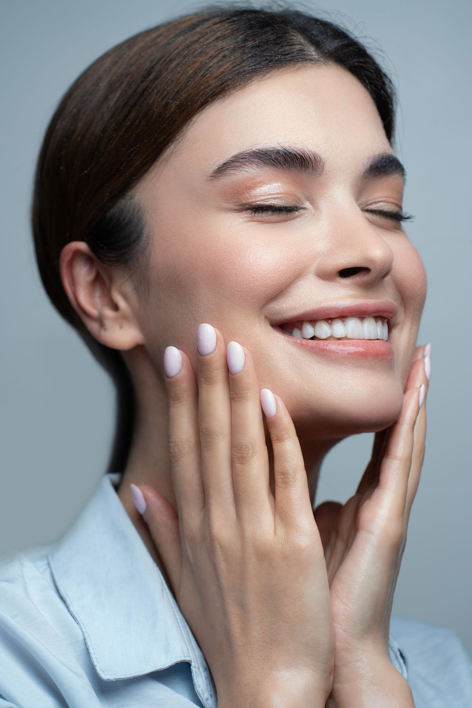
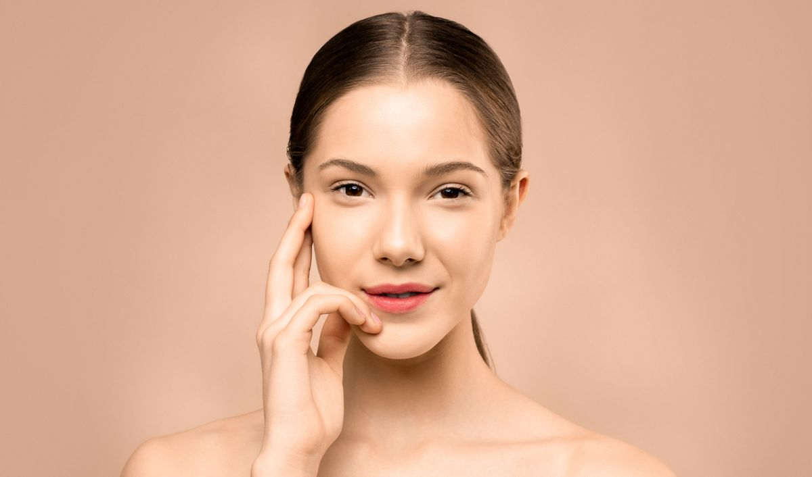
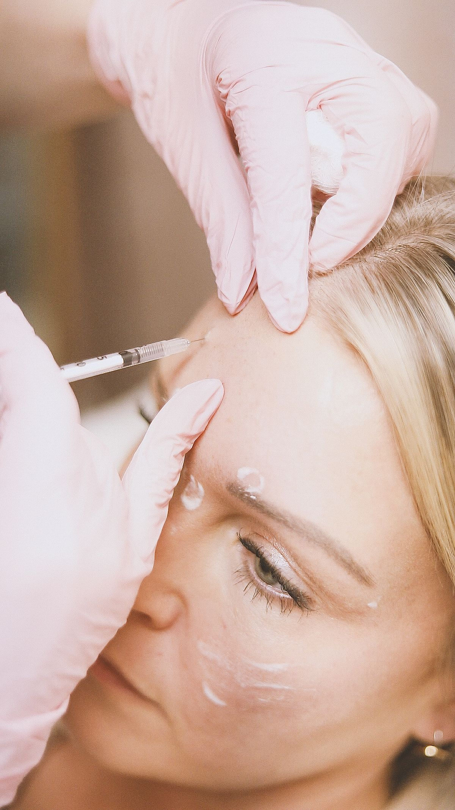
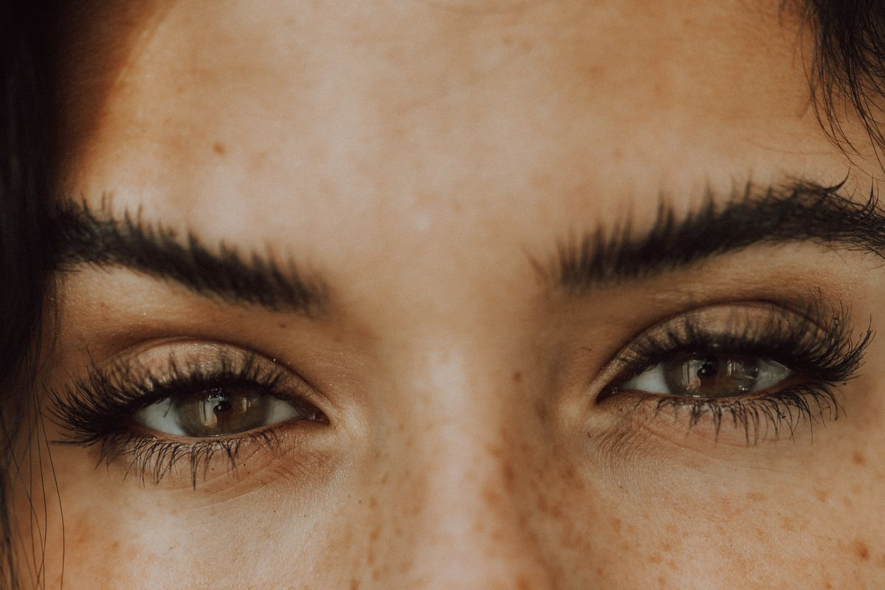
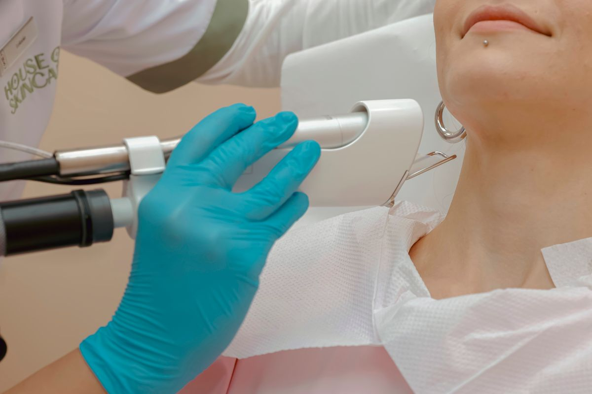
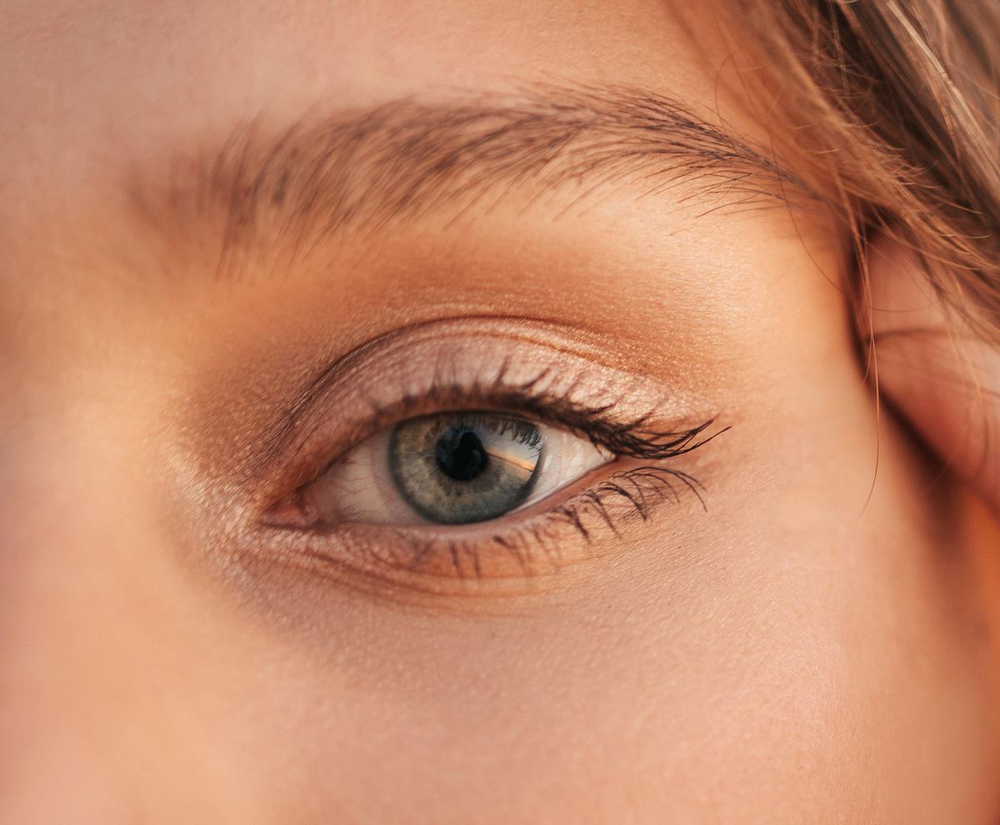
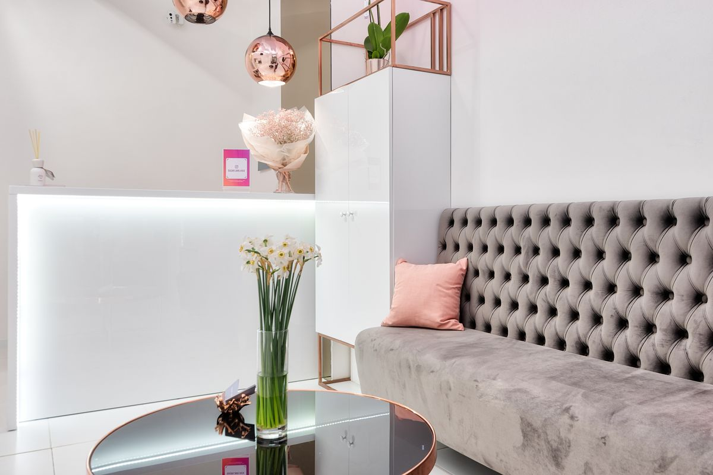
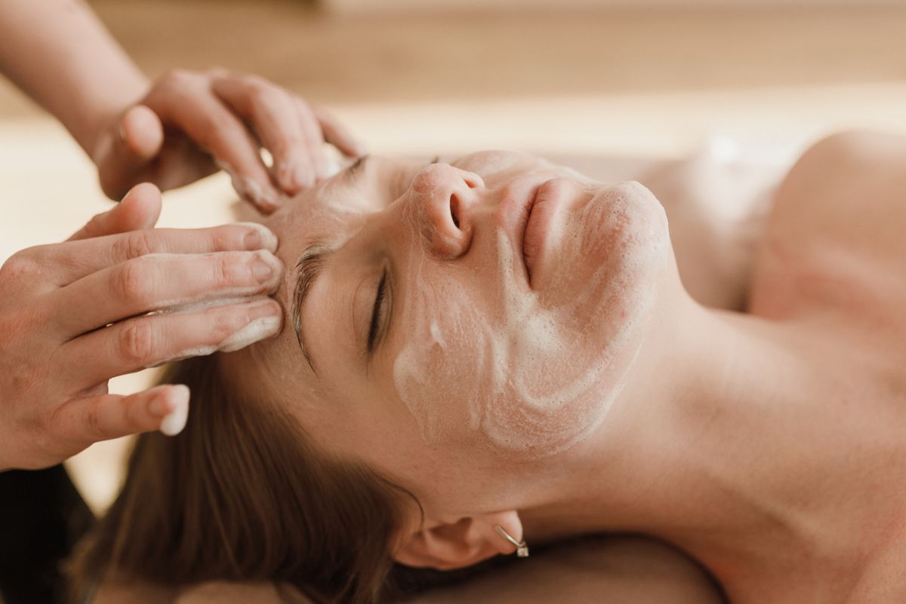
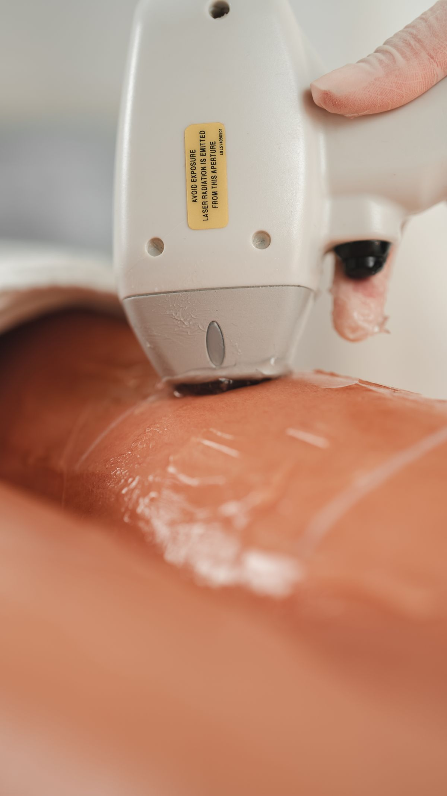
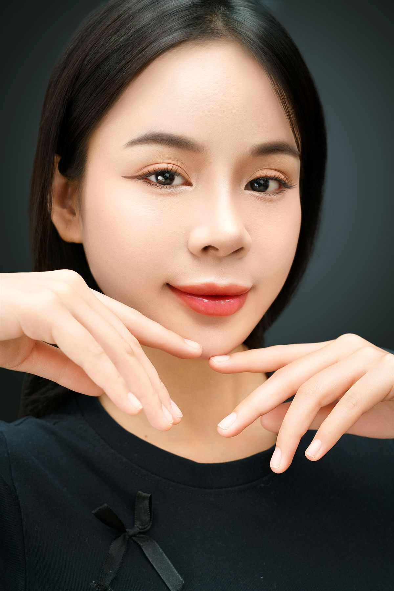

لیزر فوتونا (Fotona 4D)
جوانسازی چهاربعدی پوست با لیزر فوتونا؛ کمک به تحریک کلاژنسازی، بهبود بافت پوست و کاهش ظاهر ترکهای پوستی.
دکتر مهتاب رضوی، پزشک زیبایی، با رویکرد جوانسازی و کانتورینگ طبیعی و با دو تکنولوژی لیزر فوتونا و کندلا در زعفرانیه تهران در کنار شماست؛ تغییرهای ظریف و حسابشده، بدون فاصله گرفتن از چهره واقعیتان.

خدمات جوانسازی، لیزر و تزریقی مرکز، با تمرکز بر نتیجهای طبیعی و متناسب با چهره هر فرد.
جوانسازی چهاربعدی پوست با لیزر فوتونا؛ کمک به تحریک کلاژنسازی، بهبود بافت پوست و کاهش ظاهر ترکهای پوستی.

رفع موهای زائد صورت و بدن با لیزر کندلا؛ پوستی صاف و یکدست، با جلسات منظم و زیر نظر پزشک.

درمانهای جوانسازی برای بهبود کیفیت، شفافیت و قوام پوست و کاهش نشانههای خستگی و پیری چهره.
زاویهسازی فک و اصلاح تناسب نیمرخ با ترکیب تکنیکها؛ هماهنگی ظریف اجزای صورت، نه تغییر اغراقآمیز.

فیلر لب، چانه و گونه با تمرکز بر فرمدهی، تقارن و حفظ ظرافت؛ حجمی متناسب با چهره شما، نه بیشتر.

کاهش خطوط دینامیک پیشانی و دور چشم با تزریق دقیق بوتاکس؛ چهرهای آرامتر و شادابتر، با حفظ حالت طبیعی صورت.

اندولیفت و ساکشن غبغب برای کاهش چربی اضافه زیر چانه و واضحتر شدن خط و زاویه فک؛ گاهی فقط چند میلیمتر تغییر، فرم کل صورت را عوض میکند.

جراحی زیبایی پلک برای رفع افتادگی و پف پلکها و بازگرداندن شادابی و باز بودن نگاه.
فلسفه این مرکز، «جوانسازی و کانتورینگ طبیعی» است: هر درمان باید با چهره واقعی شما هماهنگ باشد و نتیجه، نسخه شادابتر خودتان باشد — نه چهرهای متفاوت.
دکتر مهتاب رضوی، پزشک زیبایی، درمانهای لیزری، تزریقی و جراحی مرکز را شخصاً و با شناخت دقیق آناتومی چهره انجام میدهد.
لیزر فوتونا برای جوانسازی و بازسازی پوست و لیزر کندلا برای رفع موهای زائد، هر دو در همین مرکز در دسترس است.
از فیلر لب تا زاویهسازی فک، هدف حفظ تناسب و ظرافت چهره است؛ تغییرهای کوچک و درست، بهجای تغییرهای بزرگ و مصنوعی.
بدون فرمهای پیچیده؛ کافی است در واتساپ یا تلگرام پیام بدهید و نوبتتان را هماهنگ کنید.
محیطی آرام و حرفهای در زعفرانیه، برای تجربهای مطمئن از درمانهای زیبایی.





در واتساپ یا تلگرام پیام میدهید و زمان مراجعهتان در مرکز زعفرانیه هماهنگ میشود.
پزشک پوست و چهره شما را معاینه میکند و بر اساس نیاز واقعیتان، درمان مناسب را پیشنهاد میدهد.
درمان — لیزر، تزریق یا جراحی — با دقت و با رویکرد طبیعی انجام میشود تا نتیجه با چهرهتان هماهنگ باشد.
نکات مراقبت بعد از درمان گفته میشود و برای کنترل نتیجه و جلسات بعدی، در کنار شما هستیم.
سادهترین راه، ارسال پیام در واتساپ به شماره ۰۹۱۲۰۶۲۸۲۹۸ یا پیام در تلگرام مرکز است. همچنین میتوانید با شماره ثابت مرکز ۰۲۱۲۲۱۷۸۰۸۰ تماس بگیرید.
لیزر فوتونا برای جوانسازی و بازسازی پوست به کار میرود؛ از جمله جوانسازی چهاربعدی (Fotona 4D) و بهبود ظاهر ترکهای پوستی. لیزر کندلا برای رفع موهای زائد صورت و بدن استفاده میشود.
رویکرد این مرکز «جوانسازی و کانتورینگ طبیعی» است؛ یعنی در فیلر، بوتاکس و زاویهسازی، تناسب و ظرافت چهره خودتان معیار است و از تغییرات اغراقآمیز پرهیز میشود. طرح دقیق درمان در جلسه مشاوره با پزشک مشخص میشود.
تهران، زعفرانیه، خیابان مقدس اردبیلی، نرسیده به پسیان، پلاک ۲۵، طبقه ۲، واحد ۳.
برای رزرو نوبت مشاوره در مرکز دکتر رضوی، همین حالا پیام بدهید.